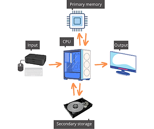
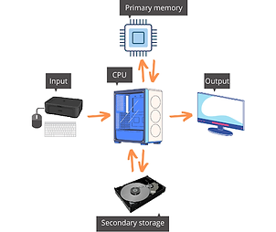

Computers as general purpose machines
We are all familiar with widely popular “general purpose” computers such as desktops, laptops or tablets. Yet, modern mobile phones or gaming consoles are computers too, and even disparate devices such as digital cameras, audio players, watches, tv sets, washing machines, cars, drones or even modern clothes and shoes, all embed computers which are instrumental to support their functionalities.
Examples of Computers
Computers common generic architecture
Despite the huge varieties of computers, every single one of them share a very similar architecture, and is made out of a physical part (hardware), as well as applications consisting of series of instructions (software). The main objective of the architecture is to identify the main components and define how they interact with each other. At the macroscopic level this generic architecture can be schematized as in the following diagrams:
 

The core component of any computer is the so called Central Processing Unit (CPU). The CPU reads and executes instruction fetched one by one from a primary (or central, or main) memory, processing the data in input, and producing data in output. The input data could come, for example, from a keyboard or from a sensor detecting the level of oxygen in the blood of a patient. The output data, for example, could display a picture on a monitor or control the amount of gasoline injected in the engine of a car. Two key reasons have made it possible to use the same architecture for such a wide variety of contexts: the concept of stored program machine and the digital representation of the information.
Stored program machines
Indeed, before the advent of the modern computer, machines able to carry out computations were already available. Yet each machine was custom built for a single, specific purpose. A stored program computer, on the contrary, is a machine that stores program instructions in memory. By changing the programs in its memory, the same machine can perform totally different functions. Modern memories are electronic, magnetic, or optical devices; in the past, program instructions were stored in plugboards or similar mechanisms.
Digital (uniform) representation of information
The second reason that made it possible to use the same architecture in many different contexts and applications, is the possibility to represent and process different types of information, not only numbers, but also text, audio, images, videos…, uniformly as digits, as discussed in the next session.
In a computer, a sequence of binary digits can represent a sequence of characters. For instance, the above code may represent the word "Cat".
The same sequence may also represents the 3 numbers "67, 97, 116", or "4.415.860" if considered as a single 24-bit number.
In a different context, the same sequence again may represent the above dark shade of blue. Indeed, by considering
67, 97 and 116 as the levels of red, green and blue intensity, these digits represent a color.